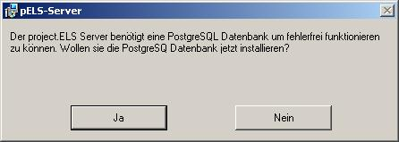
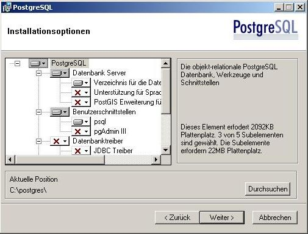
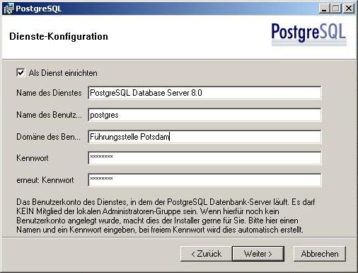
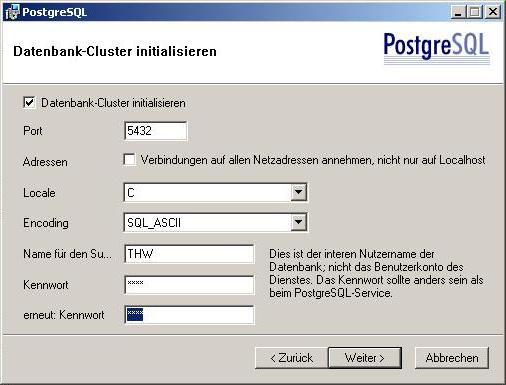
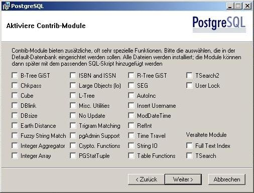
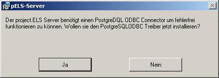
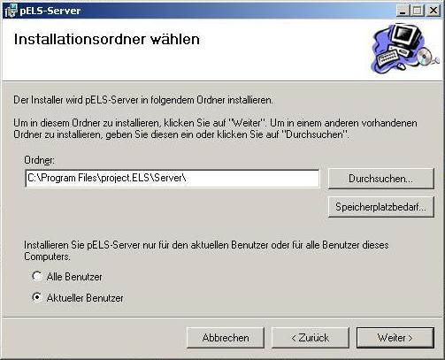

|
|
|
|
Zurück
 Installation des Servers Installation des Servers
Installationsvoraussetzung
Hardware
- IBM-kompatible Hardware, welche die oben genannte Software in benutzerfreundlicher Geschwindigkeit ablaufen lässt
Software
Installation Schritt für Schritt
- Legen sie die project.ELS CD in ein beliebiges CD/DVD Laufwerk ein.
- Öffnen sie die project.ELS CD mit dem Windows Explorer
- Wechseln sie in den Ordner Installer
- Wechseln sie in den Unterordner Server
- Starten sie die Datei Setup.exe
- Haben sie bereits eine PostgreSQL 8.0.1 Datenbank installiert?
Falls nicht, öffnet sich das folgende Dialogfenster.

PostgreSQL Datenbank nicht gefunden
Drücken sie auf Ja, um den PostgreSQL 8.0.1 Datenbank zu installieren. Falls sie Nein drücken, wird die project.ELS Installation abgebrochen.
- Wenn sie ja gedrückt haben, erscheint ein Installationsassistent für die PostgreSQL 8.0.1 Datenbank.
Folgen sie den Installationsanweisungen.
- Bitte nehmen sie im Fenster Werkzeuge und Schnittstellen nur Änderungen vor, wenn sie mit dem Umgang von PostgreSQL Erfahrung haben.

PostgreSQL: Werkzeuge und Schnittstellen
- In folgenden Fenster können PostgreSQL als Dienst installieren. Für den project.ELS Server ist erforderlich, das PostgreSQL als Dienst installiert ist.
Der Benutzername und Passwort kann von ihnen frei gewählt werden, und wird zur Authentifizierung benötigt um spätere Administritive Aufgaben an PostgreSQL durchführen zu können.

PostgreSQL: Dienstkonfiguration
- Im Fenster "Datenbank-Cluster initialisieren" müssen sie ihren gewünschten Benutzername und ihr Passwort eingeben mit welchem sie auf die Datenbank zugreifen wollen.
WICHTIG: Merken sie sich den Benutzername und das Passwort, da sie beide bei der Serverkonfiguration benötigen.

PostgreSQL: Datenbank-Cluster aktualisieren
- Als nächstes können Sie zusätzliche Funktionalität in der Datenbank aktivieren. Der project.ELS Server benötigt aber keines der auswählbaren Module.

PostgreSQL: Aktiviere Module
- Nachdem die PostgreSQL 8.0.1 Datenbank erfolgreich installiert wurde, startet der project.ELS Installationsassistent automatisch erneut.
- Haben sie bereits einen PostgreSQL ODBC Driver installiert?
Falls nicht, öffnet sich das folgende Dialogfenster.

Drücken sie auf Ja, um den PostgreSQL ODBC Driver zu installieren. Falls sie Nein drücken, wird die project.ELS Installation abgebrochen.
- Nachdem der PostgreSQL ODBC Driver erfolgreich installiert wurde, startet der project.ELS Installationsassistent automatisch erneut.
- Lesen sie die Hinweise und folgen sie den Installationshinweisen.
- Wählen sie das Verzeichnis, in das der project.ELS Server installiert werden soll.
ACHTUNG: Wählen sie ein Verzeichnis, für das sie uneingeschränkte Schreibrechte besitzen.

- Warten Sie bis der project.ELS Server vollständig installiert ist.
- Nach Abschluss der Installation, starten Sie ihren Rechner neu, damit Änderungen am System übernommen werden.
Starten des project.ELS Servers
Um den Server zu starten, benutzen Sie die auf Ihrem Desktop erstellte Verknüpfung.
Viel Spaß bei der Verwendung unserer Software.
Problembehandlung
- Problem: Während der Installation der PostgreSQL Datenbank öffnet sich nochmal das Fenster "Wollen sie die PostgreSQL Datenbank insallieren?".
Ursache: Das PostgreSQL Datenbankmanagement startet während der Insallation in einem anderen Prozess neu.
Lösung: Verneinen sie die Frage und starten sie den project.ELS Server Installationsassistenten neu, nachdem sie die PostgreSQL Installation abgeschlossen haben.
Haben Sie ein hier nicht aufgelistetes Problem, mailen Sie es uns an els@sigmadelta.de und wir werden uns schnellst möglich für eine Lösung sorgen.
|
|